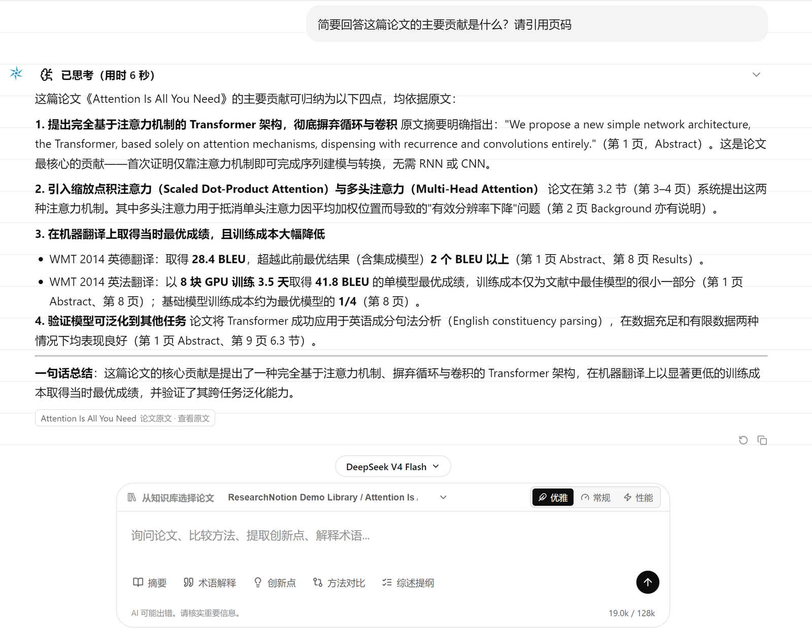
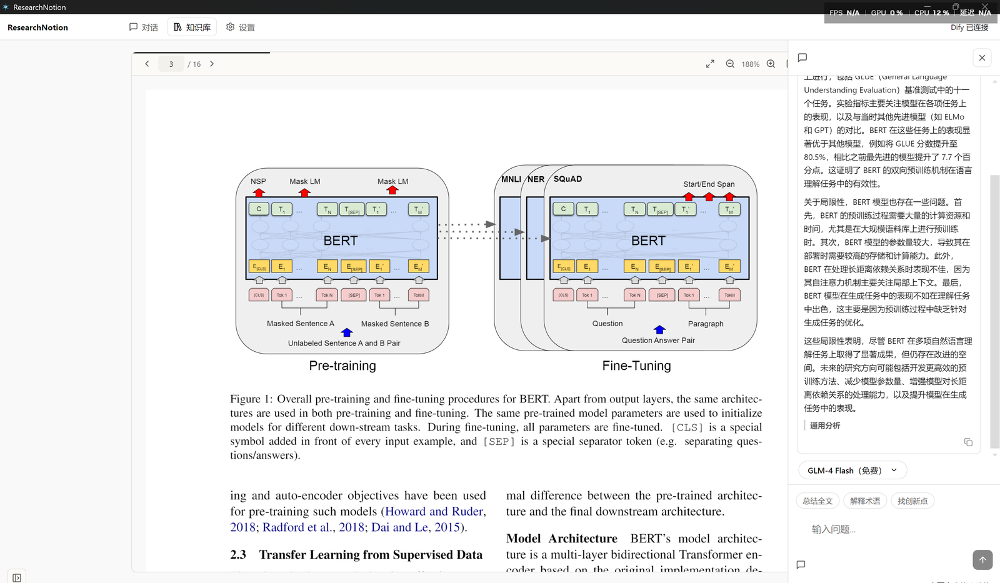
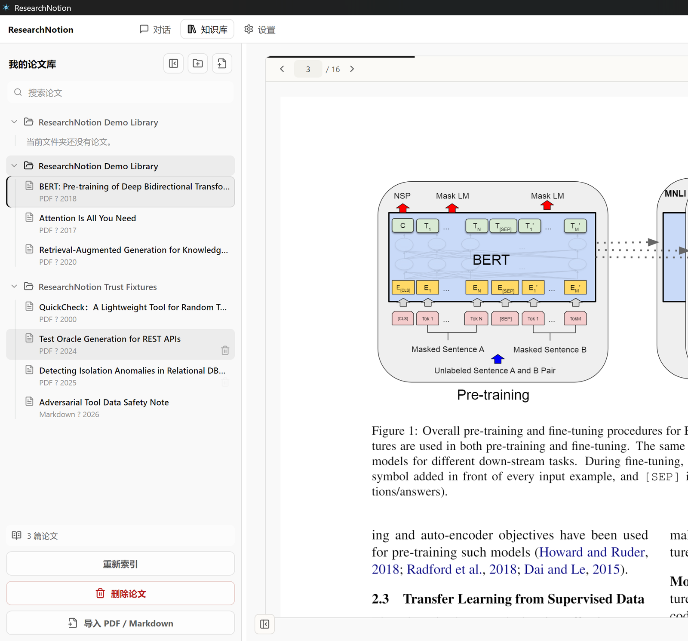
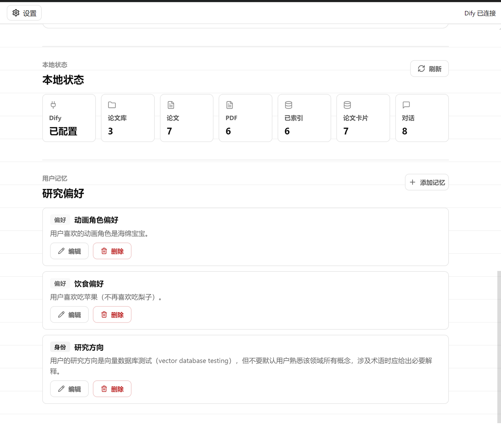
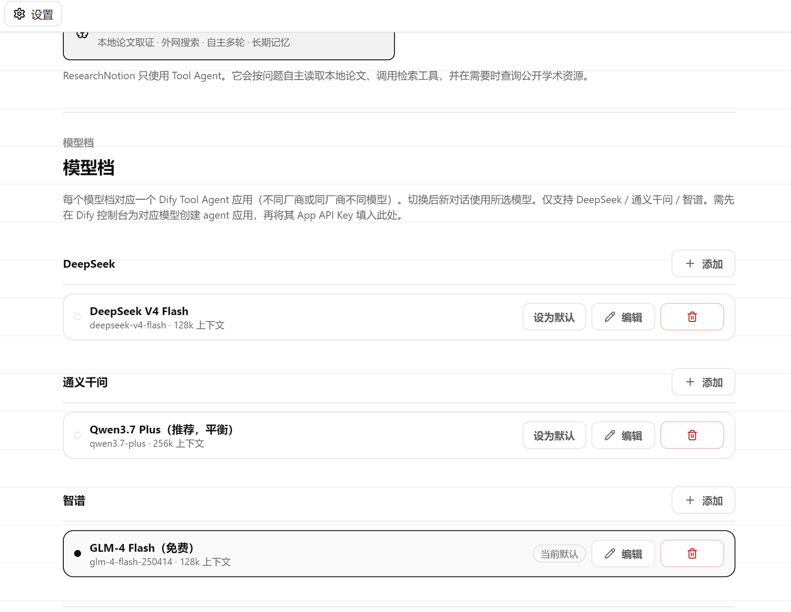
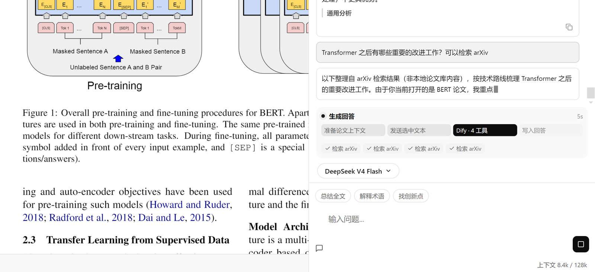

本地论文库 × PDF 阅读器 × 自主调用的 AI Agent —— 回答必有页码，结论可核验。
Agent 自主决定要什么证据，多轮工具调用后作答 —— 每一步都看得见。
"这篇论文的创新点是什么？引用页码。" 自然语言提问，无需学检索语法。
16 个本地工具按需调用：读当前页、章节、大纲，或跨论文库检索。
回答中的引用点击即跳回 PDF 原文位置；证据不足时明说边界，不编造。






从导入到取证到外网检索，一个桌面端覆盖整个文献工作流。
PDF / Markdown 拖入自动生成结构化卡片：一句话摘要、作者、年份与关键词，可搜索。
适宽、翻页、双栏自动顺序阅读，Ctrl+I 随时呼出论文 AI。
问题需要时自动检索 arXiv 与 Semantic Scholar，把最新工作与本地论文对照。
论文、对话、设置全存本机 SQLite；API Key 系统级加密存储。
身份、课题、偏好长期记忆，按需注入对话，越用越顺手。
DeepSeek 多档位配置，输出速度三档切换：优雅打字机 / 常规 / 性能直通。